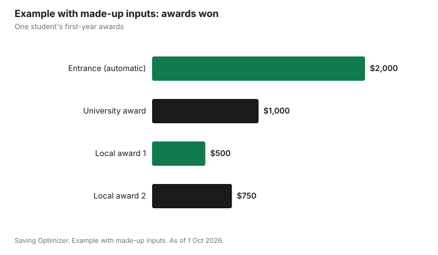

Education · Canada
Scholarship Calendar for Canadian High School Students, 2026-27: National Deadlines and How to Plan

For Canadian high school students starting university in fall 2027, the biggest national scholarship deadlines come early: the Loran Award closes on 15 October 2026 at noon ET, and Schulich Leader Scholarships need a school nomination by 27 January 2027 and a completed application by 17 February 2027. Most universities in Canada also give entrance scholarships automatically based on admission averages, while others need a separate application with deadlines between December and March. A simple calendar, a reusable set of essays and two references lined up in the fall make it realistic to apply widely without losing marks in Grade 12.
Key takeaways
- Loran Award: deadline 15 October 2026 at noon ET. Valued at approximately $150,000 over four years. 88% minimum average in Grade 10 to 12 courses.
- Schulich Leader Scholarships: your school must nominate you by 27 January 2027; your application and two reference letters are due 17 February 2027.
- Schulich values: $120,000 for engineering and $100,000 for science, technology or math, with 100 awards a year.
- TD Scholarships for Community Leadership are not accepting new applications, so do not plan around them.
- Many university entrance scholarships are automatic; others need a separate form. Check each school's awards page.
- Never pay a fee to apply for a scholarship or to be "matched" to one.
The national deadlines, in order
| Award | Deadline | Value | Who can apply |
|---|---|---|---|
| Loran Award | 15 Oct 2026, noon ET | Approximately $150,000 over four years | Canadian citizens or permanent residents in final year of high school or CEGEP; 88% minimum average |
| Loran finalist and provincial awards | Same application | $6,000 or $3,000 one-time | Selected from Loran applicants |
| Schulich Leader Scholarships | School nomination 27 Jan 2027; application 17 Feb 2027 | $120,000 (engineering) or $100,000 (science, technology, math) | One nominee per high school (more for some schools and CEGEPs); Canadian citizens entering an eligible STEM program |
Loran Award
The Loran Scholars Foundation's award is offered with 25 Canadian partner universities and is renewable for up to four years. Its financial support is a $12,000 annual stipend, a full tuition waiver at a partner university, and up to $14,000 for summer experiential learning. Scholars are expected to live in residence in first year, take part in mentoring and summer programs, and keep at least a B+ (77%) average.
To apply, you need at least an 88% average across Grade 10, 11 and 12 level courses, weighted by credits; CEGEP students use their R-score. Applicants slightly below, between 86% and 88%, who faced significant barriers can ask to be considered. You need an official transcript or marks summary (Ontario's myBlueprint is not accepted) and one reference from someone who is not family or a friend. The reference must also be in by the deadline. Semi-finalists are interviewed online, and national interviews are held in Toronto from 18 to 21 February 2027. Even applicants who do not become Loran Scholars can receive one of up to 54 finalist awards of $6,000 or up to 70 provincial and territorial awards of $3,000, which can be used at any accredited public university in Canada.
Schulich Leader Scholarships
Schulich Leader Scholarships fund up to 100 undergraduate STEM students a year at 20 partner universities. Engineering recipients receive $30,000 a year and science, technology or math recipients $25,000 a year. You cannot apply directly: your high school or CEGEP picks a nominee and submits the nomination by 27 January 2027. The nominee then completes an application with three short essays, a one-minute video, a transcript and two reference letters by 17 February 2027. Universities choose their recipients, and winners are finalized by 15 June 2027. The program looks for entrepreneurial students heading into technology, engineering, business or applied research, gives strong consideration to financial need, and does not consider students planning to become physicians or academics.
If you think you fit, tell your guidance office in the fall. Schools often run their own internal selection well before January.
A program that has ended
TD Scholarships for Community Leadership, once worth up to $70,000, are not accepting new applications. Older scholarship lists online may still show them. Check the sponsor's own page before you put any award on your calendar.
University entrance scholarships
Most Canadian universities offer entrance scholarships. Many are automatic: you are considered when you apply for admission, usually based on your admission average, and the amount is shown in or near your offer. Others need a separate application, often with essays and references, with deadlines that vary by school and commonly fall between December and March. Some universities also have a major award that needs a school nomination.
Read each university's awards page as soon as you know where you are applying. Write down whether its awards are automatic, which need a separate application, and the deadline for each. Ontario applicants applying through OUAC by 15 January 2027 should check whether a university's scholarship deadline is earlier than its admission deadline.
A month-by-month calendar for Grade 12
| Month | What to do |
|---|---|
| October 2026 | Submit Loran by 15 Oct at noon ET. Ask guidance about Schulich and other school nominations. Start a list of local awards. |
| November 2026 | Draft core essays: leadership, a challenge you overcame, community service. Ask two referees early. |
| December 2026 | Check each university's awards page; note separate scholarship applications and deadlines. |
| January 2027 | Submit OUAC by 15 Jan (Ontario Group A). School Schulich nominations due 27 Jan. |
| February 2027 | Schulich applications and references due 17 Feb. Submit university award applications due this month. |
| March to May 2027 | Local and community awards from service clubs, employers, unions and credit unions. Many are listed by guidance offices. |
| June 2027 | Graduation awards at school. Note conditions such as proof of enrolment before payment. |
Local awards: smaller amounts, better odds
Service clubs, unions, employers, credit unions, municipalities, cultural organizations and community foundations offer awards that are often a few hundred to a few thousand dollars. Fewer students apply, and many reuse the same essays. A parent's employer or union, or a student's own part-time employer, may have an award only its families can apply for. Ask your guidance office for its local list and check your community foundation's website.
A system that saves time
- Keep one document with your activities, hours, roles and results. Most applications ask for the same facts.
- Write three or four core essays and adapt them. Keep word limits in mind: Schulich's essays are 250 words each.
- Ask referees once, with your activity list and the deadlines in one email, at least three weeks ahead.
- Order official transcripts early. Loran will not accept report cards or screenshots.
- Track every application in a table: award, deadline, documents, submitted, result.
| Award | Deadline | Documents needed | Submitted? | Result |
|---|---|---|---|---|
Are scholarships taxable?
For most full-time students, no. Scholarships, fellowships and bursaries received for a program that makes you eligible for the education amount are generally fully exempt from income tax under the scholarship exemption, though you still report them on your return. Part-time students and some other situations have limits. Read the CRA's guidance on line 13010 or ask a tax professional if your situation is unusual.
Scholarships can also interact with student aid. Tell your student aid office about awards when asked, and read how your province counts them. RESP payments are separate: scholarships do not reduce what a student can withdraw as Educational Assistance Payments, explained in the RESP withdrawals guide.
Example with made-up inputs: what an afternoon a week can add up to
These numbers are an example with made-up inputs. They are not award amounts any student should expect. A student applies to one national award, four university awards and six local awards between October and March. They win a $1,000 university award and two local awards of $500 and $750. Their automatic entrance scholarship is $2,000.
| Award type | Amount |
|---|---|
| Automatic entrance scholarship | $2,000 |
| University award (separate application) | $1,000 |
| Local award 1 | $500 |
| Local award 2 | $750 |
| Total | $4,250 |

Those $4,250 are first-year money that does not need to be repaid, which matters more now that most of Ontario's student aid comes as loans.
Avoid scholarship scams
- Do not pay an application fee or a "processing" or "matching" fee. Legitimate awards do not charge to apply.
- Be wary of awards you never applied for that ask for banking details or a payment to release funds.
- Check the sponsor's own website and contact details, not just a listing site.
- Guidance offices, universities' awards pages and community foundations are reliable starting points.
Common mistakes
- Missing Loran because it closes in October, before many students start thinking about awards.
- Waiting for a Schulich nomination without telling guidance you are interested.
- Assuming every entrance award is automatic.
- Asking referees the week of the deadline.
- Ignoring small local awards.
Sources
- Loran Scholars Foundation, Frequently Asked Questions and How it Works (loranscholar.ca), as of 1 Oct 2026. Deadline 15 Oct 2026 at noon ET; 88% minimum average; approximately $150,000 over four years; $12,000 stipend; tuition waiver; up to $14,000 summer; finalist and provincial awards; national interviews 18 to 21 Feb 2027.
- Schulich Leader Scholarships, FAQ and High school nomination process (schulichleaders.com), as of 1 Oct 2026. Nomination 27 Jan 2027; application 17 Feb 2027; $120,000 and $100,000; 100 awards at 20 universities; winners finalized 15 Jun 2027.
- TD, TD Scholarships for Community Leadership program pages and reports, as of 1 Oct 2026. Not accepting new applications.
- Canada Revenue Agency, Line 13010 Taxable scholarships, fellowships, bursaries, and artists' project grants, as of 1 Oct 2026. Scholarship exemption.
- The awards and amounts in the example table and chart are an example with made-up inputs.
Frequently asked questions
When is the Loran Award deadline for 2027?
For students entering university in 2027, the Loran Award deadline is 15 October 2026 at noon ET. References must also be submitted by then, and late applications are not accepted.
How much is the Loran Award worth?
The Loran Scholars Foundation says the award is valued at approximately $150,000 over four years. It includes a $12,000 annual stipend, a full tuition waiver at one of 25 partner universities and up to $14,000 for summer experiential learning. Finalist awards of $6,000 and provincial awards of $3,000 are also given.
What are the Schulich Leader Scholarship deadlines for 2027?
High schools must submit their nominee by 27 January 2027. The nominee's application and two reference letters are due 17 February 2027. Students cannot apply without a school nomination.
Are scholarships taxable in Canada?
For most full-time students, scholarships and bursaries for a program that qualifies for the education amount are fully exempt under the scholarship exemption, but they must still be reported on the tax return. Part-time students may have limits.
Should I pay to apply for a scholarship?
No. Legitimate scholarships do not charge application or matching fees. Check the sponsor's own website and use guidance offices, university awards pages and community foundations.
Researched and drafted with AI assistance and fact-checked against official Canadian sources. How we create content.
Disclosure: Saving Optimizer may earn a commission if a partner link is added later, such as a student bank account offer type. No partnership with the Loran Scholars Foundation, Schulich Leader Scholarships or any university is claimed on this page, and no award is ranked. Education only.